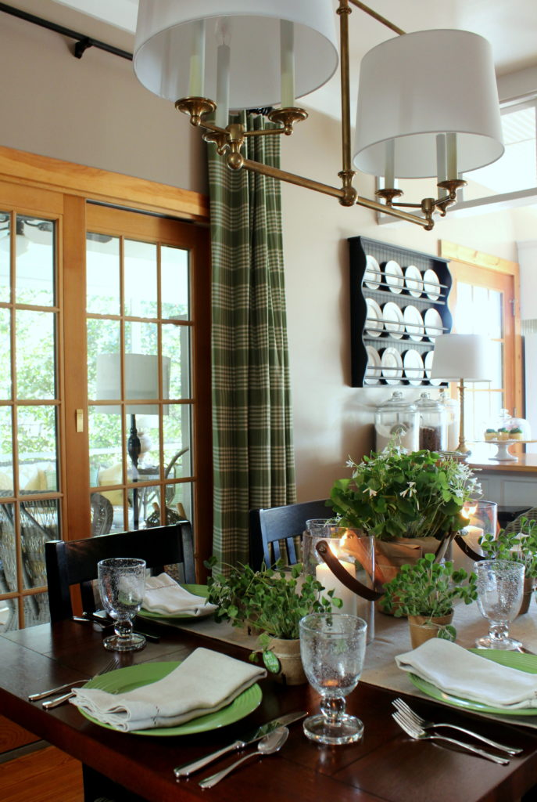
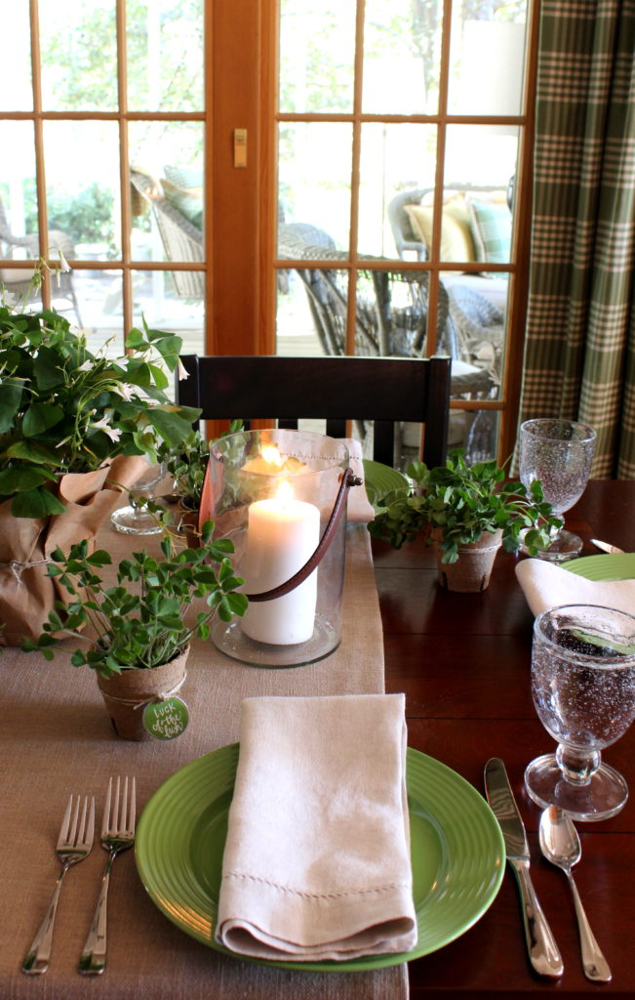

.png)
.PNG)
.PNG)
.PNG)
.PNG)
.PNG)
.JPG)
.JPG)
.PNG)
.PNG)


March has come in like a lion all over most of the United States. Hopefully it will go out like a lamb, and now here we are already smack dab in the middle with lucky St. Patrick’s Day. If you like the color green then I hope you will LOVE today’s post! 🙂 I’ve set our table for our St. Patrick’s Day dinner, and of course it has green to the max!

I found the green dinner plates at Dollar Tree.

I already had green salad plates but had been unable to find economical dinner plates. Fiesta has some, but they are around $12 each for the dinner plate size, so when I saw these for $1 each, I could not resist. (I am probably going to regret not getting the matching mugs they had there. 🙁 )

I said the table had green to the max. Well…it also has clover to the max! 🙂 I found the Oxalis plant at my local grocery store and thought it would be perfect for the centerpiece. Another name it goes by is Lucky Shamrock. A fun thing to note about Oxalis is that it is sensitive to light and will close up its leaves at night.

For the place setting gifts, my husband dug up some of the clover plants we had growing in our yard. We planted them in clear plastic cups. Then we popped those cups into peat pots.

We put them in clear plastic cups first so that the damp soil did not get the pots wet as they sat on the table.

I wrapped twine around the pots and tied on tags with St. Patrick’s Day sayings that I hand lettered on them.

For our meal, I was planning on serving our favorite corned beef sandwiches (again) with homemade potato chips, (not very Irish, I know) but several people over on Instagram have suggested Shepherd’s Pie.

I’ve never made Shepherd’s Pie, and after looking at the recipe I know why. The vegetables mixed with the meat don’t sound very appealing to me…but the mashed potatoes on top of the beef sounds delicious! So I may give it a try this year (without those bottom layer veggies of course. 🙂 )


For dessert this year, I am making a variation of my Peppermint Ice Cream pie. Our daughter’s boyfriend must have foods that are gluten and dairy free. I found some gluten free chocolate sandwich cookies (like Oreos) for the crust, and I am using Breyer’s lactose free chocolate ice cream and some chocolate mint candy pieces for a Chocolate Mint Ice Cream pie. Fingers crossed it turns out okay. If not, there are always cupcakes from the store, and daughter’s boyfriend can have the lactose free vanilla ice cream in the freezer. 😉

Before I came up with the idea for this year’s St. Patrick’s Day table, I looked back at all the other ones I have done over the last few years. It’s always hard to remember Have I done that? when I start thinking of ideas, so having the photos here on the blog is helpful. And I also thought it might be beneficial for you as well if I pulled all the table settings into one post for you here as an easy reference. (The clickable source link below each photo takes you to the posts with more details.) Hope you find these helpful!
The dining room from 2013…


The porch from 2014…


The dining room from 2015…


The porch from 2016…


And the dining room from 2016.


It has been waaaay too cold this week to even think about doing a St. Patrick’s Day dinner on the porch. So the dining room is going to have to do for our meal this year. 🙂

Hope your St. Patrick’s Day is full of good luck, fun times, and tasty treats for you. 🙂
Remember to wear your green!

Until next time…


.PNG)
Love it! I’m late getting caught up on your posts. You’re decorations just keep getting better. I made Crockpot Corned Beef and Hash with Crockpot Buttermilk Mashed Potatoes, it was delish. Haven’t tried Shepherds Pie yet, but I plan to.
Kelly,
I love those green plates from Dollar Tree! I might just have to get some of those if I can find them. Such a nice color for spring.
Your table settings are beautiful.
We celebrated Josie’s birthday this weekend and the green doughnuts from Krispie Kreme were really good! Thanks to Fred for waiting in the long line to get them. Life is too short not to have a green doughnut–at least once.
Have a good week.
DiAnne
——————————————————————-
I am thinking about a whole different color combination using those green plates for Easter, so they are going to be quite versatile I think. 🙂 You should make a run to Dollar Tree!
I seriously contemplated those doughnuts but decided to forego the calories. I KNOW they were delicious! Fred is a keeper for sure. 🙂
Kelly
Your tables are always such an inspiration. Your little details — hand lettered tags, small gifts at each place setting — they are the icing on the cake!
———————————————————————-
Thank you so much Kim! It’s the details that are the most fun for me, and I think everyone really appreciates them. 🙂
Kelly
Where did you get those gorgeous glass hurricanes? Love those leather looking handles!
——————————————————————–
Hi Heather! They came from Target. They have a really good selection of lanterns in their spring outdoor furniture and accessories area (at the back of the store where they have their seasonal things.) Glad you like them!
Kelly
Love, Love, Love your green St. Patrick’s Day tablescape! I am embarrassed to say, I shop at Dollar Tree every week and never thought about looking for green plates there!?! I love that shade of green and how well it went with the Shamrock plant for your tablescape! Thank you for sharing…..I’m heading to Dollar Tree!
—————————————————————-
Thank you Lanita! I always look at their plates every season. You can’t beat $1 plates in solid bright colors. If I had the space, I’d buy whole sets of their dishes! (Dish addict here. 🙁 )
Kelly
Kelly,
Thanks for the recap of all of your lovely St. Patrick’s Day settings! I love them all and I love green! I always appreciate your live, green plants and little treats! I did green cookies and Hershey’s gold nuggets for my students this year. It’s the little things that mean the most to us isn’t it. Just to be thought of is such a blessing! Thanks for sharing! Happy St. Patrick’s Day to all!
Dawn
——————————————————————
I should have dedicated this post to you, Dawn! I knew you would like all the green. 🙂 Green cookies and Hershey chocolate sounds perfect to me! You are so right about just being thought of being a blessing. I know your students enjoyed their treats!
Hope you are enjoying your weekend!
Kelly
Kelly – your tablescape made me green with envy! You were lucky to get those plates for $1. Very pretty! Shepherd’s Pie can be make with only one veggie – I’ve had to make it that way when the children were little – corn was a favorite of theirs!
Happy St. Patrick’s Day to you and your family!
——————————————————————-
Yes, I was very lucky to find those plates! Almost as inexpensive as disposable ones! 🙂 One veggie might be okay here….I just don’t like carrots (yes, I know…bad me.)
Happy St. Patrick’s Day to you too Julia!
Kelly
Well Top of the Day to you sweet Kelly! Love these pictures. I think my favorite is this year’s table!
Well the leprechauns were up to lots of antics in my granddaughter’s kindergarten class last night .Those silly rascals even got into the green paint and left footprints everywhere.
My sweet husband, who is on his way out of town this morning, is currently waiting in a long line out the door at a Krispy Kreme in Asheville. I’m sure you (lover of all delicious things) knows that KK is making Every doughnut green today only. When I read this I just knew this would be the perfect fun treat to take to DiAnne’s lake house this weekend! ( Happy birthday Josie)
Remember…wear some green today…. no pinches!
—————————————————————-
Katrina, I know your St. Patrick’s Day was a fun one! How cute that the leprechauns got into the green paint. Love it! I did NOT know about the green doughnuts and really thought about getting some after your comment here. But my husband and I are TRYING to watch our weight, and I already had one dessert for St. P’s Day…so I didn’t indulge in the doughnuts (which I know have to be yummmmmmmmy!) Have fun at the lake, and please tell Josie happy birthday for me! 🙂
Kelly
So pretty Kelly! We never have “celebrated” St. Patrick’s Day, but your lovely decor, table settings and yummy menus make me want to! That pie sounds delicious. I took a look at the recipe when you instagrammed it on Pi Day. 😉 We’re celebrating March Madness in our house. Hopefully we can continue to for a few more weeks!! Ha, we’ll need the luck of the Irish for that!! 😛
——————————————————————–
The pie turned out great! I was surprised how good it tasted considering it was gluten and dairy free in this version. You need to try it Gina. 🙂 Hope your team continues to do well! March madness is fun!
Kelly
Happy St. Patrick’s Day, Kelly! As always, your decor is great!
One of my favorite meals is corned beef and cabbage; my Mother in law would corn her own beef. One of our favorite comfort meals, is Shepard’s pie. I layer cooked ground chicken, add corn, carrots, and peas, and top with whipped potatoes. Add some butter to the top and bake in oven.
Cindy
——————————————————————–
Hope you had a fun St. Patrick’s Day Cindy! Your dishes sound yummy (if I leave out the carrots. 🙂 ) Thank you for the compliments on the decor!
Kelly
Happy St Patrick’s Day, Kelly! Love everything you’ve done to make your home ready for the occasion. Enjoy the fun!
———————————————————————
Thank you very much Tricia! I’m so happy you liked all the green decor. 🙂
Kelly
Lovely table! I usually love corned beef and cabbage on St. Paddy’s Day, but it’s been hard to find a restaurant that makes it well. I tried making it myself, but that didn’t turn out as I thought it would either. So now, I make Shepherd’s pie. Always delicious! Enjoy the day! 😉
——————————————————————–
Thanks Donnamae! Hope you enjoyed your Shepherd’s pie for St. Patrick’s Day! Sounds delicious!
Kelly
Kelly,
Nobody does holiday entertaining better than you. Love the green touches!
Happy St. Patrick’s Day!
Karen
——————————————————————–
Gosh thank you Karen! Hope you had a fun St. Patrick’s Day!
Kelly
Always love your posts! Green is my lifelong favorite color! How have I NEVER noticed that absolutely fabulous chest before? The one with the green and white straws and the glass jar of shamrock cookies on top. What is the story about it? Thank you!
———————————————————————-
Thank you Elaine. If you are a fan of green, you should LOVE St. Patrick’s Day. 🙂 The antique jelly cupboard in the dining room was a gift from my mother-in-law many years ago. It was hand crafted in Savannah in the mid – 1800’s out of heart pine with raised panels on the front. I think it is a pretty neat piece too. 🙂
Thanks for asking!
Kelly
Once again, Kelly, some very creative ideas. I never think of getting green anything, except this year, when I purchased kiwi green cushions and pillows for the patio chairs. How vibrant it looks with the green. Perks it right up for spring, and dovetails nicely with St Patrick’s Day. I love the green check napkins. And the green dinner plates? Fabulous! All the tables look wonderful, and each gives me additional inspiration. “Erin go Bragh”
——————————————————————
I bet the green cushions and pillows look great Judy! And yes, they work well for St. Patrick’s as an added bonus. 🙂 Thanks for all the compliments, and I hope your St. Pat’s Day was a fun one!
Kelly
Happy St. Patrick’s Day. I love all of the tables. I don’t think I have a favorite, but I do like your lanterns this year. May all the real cold leave us behind now.
———————————————————————
Hope you had a good St. Patrick’s Day Sandy! Thank you for your sweet comments about the tables. I hope the cold is finished with us too. Time for spring to arrive for good!
Kelly
I almost bought those plates, but didn’t. I have to go back now and see if they still have them! Do you find that they are big enough? Are they dishwasher/microwave safe? Love your table!
—————————————————————
Yes, to all your questions Barbie! They were certainly big enough for our dinner last night, and they are most definitely dishwasher and microwave safe (which is better than my red ones that have to be handwashed. 🙁 ) I hope they still have some of the green ones left for you!
Kelly
All of your tables are always so beautifully decorated, Kelly. I don’t know how you keep coming up with such creative ideas!! Wish I could do the calligraphy like you do. Beautiful!!
——————————————————————–
Thank you for all the compliments on the tables Debbie! Hope your St. Patrick’s Day was filled with fun!
Kelly
Great job ! Love all your decor !!
———————————————————————
Thank you Cindy!
Kelly
Hi Kelly. Always love what you do. The question I have is about your curtains. I had some curtains made for rods and the seamstress attached rings to the curtains. This is not working as thread is breaking on these rings. It’s a mess. It was only today that I noticed you use rings with clips. Is this what you use for all of your drapes? I know your change your curtains more than most, so this must work fine for you. Any problems? Thanks.
———————————————————————
Darn! That’s not good to hear about your drapes Julie. I have used clips on some of them, and I have sewn on rings on a number of others. I actually prefer the sewn on rings. When I put them on the drapes, I loop and loop and loop the thread through them many times to make sure they are sturdy enough to hold onto the drapes. My red buffalo check ones are made from heavy fabric, and the rings are sewn on them. It takes extra long to do that, but it is worth it. The sewn on rings just look more polished to me than the clips, but the clips do work if you want to go that route.
Kelly
Happy St. Patrick’s Day Kelly! Thank you once again for inspiring me. Your Dollar Tree plates look like Fiesta! And the clover from your yard was a wonderful idea. Bravo to your husband! Take care. Julia
—————————————————————
Thanks so much Julia! My husband was weeding a flower bed, saw the patch of clover a couple of weeks ago, and decided not to pull it up because he thought I would want it for St Patrick’s Day. Yes, bravo to him! 🙂
Kelly
You find the best stuff for so little money!!! LOVE having the “round-up” of great ideas, and hope you’ll do this for each holiday at some point. Thanks for the shot o’ green to get us in the St. Paddy’s spirit!
——————————————————————-
I’m so glad you liked the round up Ruth. I thought you all might find it handy, and it was a help to me as well! Hope you had a fun Friday and that you are enjoying your weekend. 🙂
Kelly
This is so lovely. My eye went straight to that beautiful light fixture above the table…I am very late to the party asking for the source, I know. But, it is perfection.
———————————————————————
Hi Laura! So glad you like that light fixture. We purchased it from Lighting New York, and it is made by Visual Comfort – their EF Chapman Classic pendant light. http://www.lightingnewyork.com/product/visual-comfort-e-f-chapman-classic-island-lighting-sl5816hab-np.html#que
Kelly
Easiest recipe ever for shepherds pie — came from a Campbell’s Soup cookbook years ago. I don’t think you’ll mind the vegetable and meat combination at all! Brown 1lb. of ground beef with a chopped onion, garlic powder, salt and pepper. Drain very well. Add 1 can of Campbell’s “old fashioned vegetable soup(undiluted) ” and mix well. Spread into a rectangular casserole and top with mashed potatoes. Bake at 350 (preheated) for 35 -40 minutes or until meat mixture bubbles and potatoes are nicely browned. Serves 4
I sometimes bake the pies in individual ramekins when I I want to invite guests for a casual supper.
—————————————————————
Thanks for the recipe Ann! Sounds easy and delicious! And I like the idea of the individual ramekins for serving guests. 🙂
Kelly